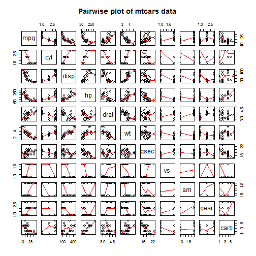
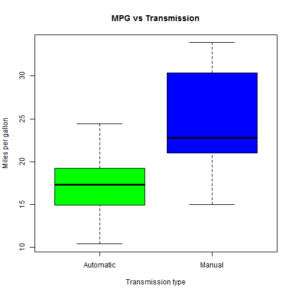

#-------------------------------------------------------------------------------
Author : Arun Kumar Madas
Date : 04/25/2015
Course : Regression Analysis - Project
#-------------------------------------------------------------------------------
Executive Summary
You work for Motor Trend, a magazine about the automobile industry. Looking at a data set of a collection of cars, they are interested in exploring the relationship between a set of variables and miles per gallon (MPG) (outcome). They are particularly interested in the following two questions:
1. "Is an automatic or manual transmission better for MPG"
2. "Quantify the MPG difference between automatic and manual transmissions
data(mtcars)
# convert qualitative data to factors
mtcars$cyl <- factor(mtcars$cyl)
mtcars$vs <- factor(mtcars$vs)
mtcars$am <- factor(mtcars$am, labels = c("Automatic", "Manual"))
mtcars$gear <- factor(mtcars$gear)
mtcars$carb <- factor(mtcars$carb)
"Is an automatic or manual transmission better for MPG"
# plot pairwise graph of mt cars
p1 = pairs(mtcars, panel = panel.smooth, main = "Pairwise plot of mtcars data")

Exploratory Analysis :
A boxplot was produced to show the difference between automatic and manual in terms of MPG. In figure 1, it is clear that manual transmission produces more MPG. Next, a pairwise graph (figure 2) was created in order to get a greater intuition of what other variables may be of interest. There is a linear relationship between MPG and each of cyl, disp, hp, drat, wt, qsec, vs, am. The covariance was also computed (figure 3) between every variable and the positive values were noted (qsec = 0.419, vs = 0.664, am = 0.600, gear = 0.480). Then a linear model was fit on all the variables to determine which variables should be used in the final models. In figure 4 the summary from this model is shown. The lowest p values were taken (i.e. wt = 0.063, am = 0.234, qsec = 0.274) due to their high significance in predicting MPG.
# check the correlation of variances between every value
cov2cor(cov(sapply(mtcars, as.numeric)))
## mpg cyl disp hp drat wt
## mpg 1.0000000 -0.8521620 -0.8475514 -0.7761684 0.68117191 -0.8676594
## cyl -0.8521620 1.0000000 0.9020329 0.8324475 -0.69993811 0.7824958
## disp -0.8475514 0.9020329 1.0000000 0.7909486 -0.71021393 0.8879799
## hp -0.7761684 0.8324475 0.7909486 1.0000000 -0.44875912 0.6587479
## drat 0.6811719 -0.6999381 -0.7102139 -0.4487591 1.00000000 -0.7124406
## wt -0.8676594 0.7824958 0.8879799 0.6587479 -0.71244065 1.0000000
## qsec 0.4186840 -0.5912421 -0.4336979 -0.7082234 0.09120476 -0.1747159
## vs 0.6640389 -0.8108118 -0.7104159 -0.7230967 0.44027846 -0.5549157
## am 0.5998324 -0.5226070 -0.5912270 -0.2432043 0.71271113 -0.6924953
## gear 0.4802848 -0.4926866 -0.5555692 -0.1257043 0.69961013 -0.5832870
## carb -0.6067431 0.5745820 0.4541413 0.7431310 -0.10283813 0.4967090
## qsec vs am gear carb
## mpg 0.41868403 0.6640389 0.59983243 0.4802848 -0.60674307
## cyl -0.59124207 -0.8108118 -0.52260705 -0.4926866 0.57458203
## disp -0.43369788 -0.7104159 -0.59122704 -0.5555692 0.45414125
## hp -0.70822339 -0.7230967 -0.24320426 -0.1257043 0.74313097
## drat 0.09120476 0.4402785 0.71271113 0.6996101 -0.10283813
## wt -0.17471588 -0.5549157 -0.69249526 -0.5832870 0.49670901
## qsec 1.00000000 0.7445354 -0.22986086 -0.2126822 -0.65553630
## vs 0.74453544 1.0000000 0.16834512 0.2060233 -0.60875020
## am -0.22986086 0.1683451 1.00000000 0.7940588 -0.01618107
## gear -0.21268223 0.2060233 0.79405876 1.0000000 0.19698421
## carb -0.65553630 -0.6087502 -0.01618107 0.1969842 1.00000000
boxplot(mpg ~ am, data = mtcars,
xlab = "Transmission type", ylab = "Miles per gallon",
main = "MPG vs Transmission", col = c("green", "blue"),
names = c("Automatic", "Manual"))

# model using all data as predictors
everything_model = lm(mpg ~ ., data = mtcars)
summary(everything_model)
##
## Call:
## lm(formula = mpg ~ ., data = mtcars)
##
## Residuals:
## Min 1Q Median 3Q Max
## -3.5087 -1.3584 -0.0948 0.7745 4.6251
##
## Coefficients:
## Estimate Std. Error t value Pr(>|t|)
## (Intercept) 23.87913 20.06582 1.190 0.2525
## cyl6 -2.64870 3.04089 -0.871 0.3975
## cyl8 -0.33616 7.15954 -0.047 0.9632
## disp 0.03555 0.03190 1.114 0.2827
## hp -0.07051 0.03943 -1.788 0.0939 .
## drat 1.18283 2.48348 0.476 0.6407
## wt -4.52978 2.53875 -1.784 0.0946 .
## qsec 0.36784 0.93540 0.393 0.6997
## vs1 1.93085 2.87126 0.672 0.5115
## amManual 1.21212 3.21355 0.377 0.7113
## gear4 1.11435 3.79952 0.293 0.7733
## gear5 2.52840 3.73636 0.677 0.5089
## carb2 -0.97935 2.31797 -0.423 0.6787
## carb3 2.99964 4.29355 0.699 0.4955
## carb4 1.09142 4.44962 0.245 0.8096
## carb6 4.47757 6.38406 0.701 0.4938
## carb8 7.25041 8.36057 0.867 0.3995
## ---
## Signif. codes: 0 '***' 0.001 '**' 0.01 '*' 0.05 '.' 0.1 ' ' 1
##
## Residual standard error: 2.833 on 15 degrees of freedom
## Multiple R-squared: 0.8931, Adjusted R-squared: 0.779
## F-statistic: 7.83 on 16 and 15 DF, p-value: 0.000124
Model
From the initial model, covariance test and visually inspecting the pairwise graph the following variables stood out in particular: qsec, vs, am, wt and gear. Next a stepwise model process was used in order to obtain the most significant predictors to be used. This is done by using the step function which creates multple regression models with different variables and produces list of the best predictors. As shown in figure 5, the most significant predictors in determining the MPG are cyl, hp, wt and am. The summary for this model is show in figure 6, in particular the forumla is given as: lm(formula = mpg ~ cyl + hp + wt + am, data = mtcars). This selection model yielded an R squared value of 84% (figure 6) meaning that very high percentage of variation is explained by the regression model. Next, the new model was compared with a basic model that only uses transmission type as its predictor. A p-value of 1.688e-08 was obtained (figure 7). This value is miniscule which means that the added predictors are significant to improving the model's accuracy.
# step wise selection process
new_model <- step(lm(mpg ~ ., data = mtcars), trace = 0)
# compare basic model to selection model
basic_model <- lm(mpg ~ am, data = mtcars)
compare <- anova(basic_model, new_model)
Diagnostics : The residuals from the final model are plotted below.
par(mfrow=c(2, 2))
plot(new_model)
 The Residuals vs Fitted plot shows no pattern between the residuals and fitted values indicating that this regression model is well fit.
The QQ plot shows that the points line up as expected meaning that the distribtion is normal and our model predictions are accurate.
In both the Scale-Location plot and the Residuals vs Leverage plots, the points are in a group with none too far from the center indicating no point had too much leverage.
The Residuals vs Fitted plot shows no pattern between the residuals and fitted values indicating that this regression model is well fit.
The QQ plot shows that the points line up as expected meaning that the distribtion is normal and our model predictions are accurate.
In both the Scale-Location plot and the Residuals vs Leverage plots, the points are in a group with none too far from the center indicating no point had too much leverage.
Statistical Inference
A Two Sample t-test was conducted between the different transmission types. The null hypothesis that transmission types don't have an effect on the MPG is discarded for a p-value greater than 0.05. The results are shown in figure 8. The p-value of 0.001374 and difference in means show that manual transmission has significantly more MPG than automatic.
t_test <- t.test(mpg ~ am, data = mtcars)
Conclusions
The transmission type of a car has a significant effect on its fuel efficiency. According to the model, manual transmission, on average, has 1.81 MPG more than automatics. According to the boxplot, manual transmission has ~ 6 MPG more than automatics.